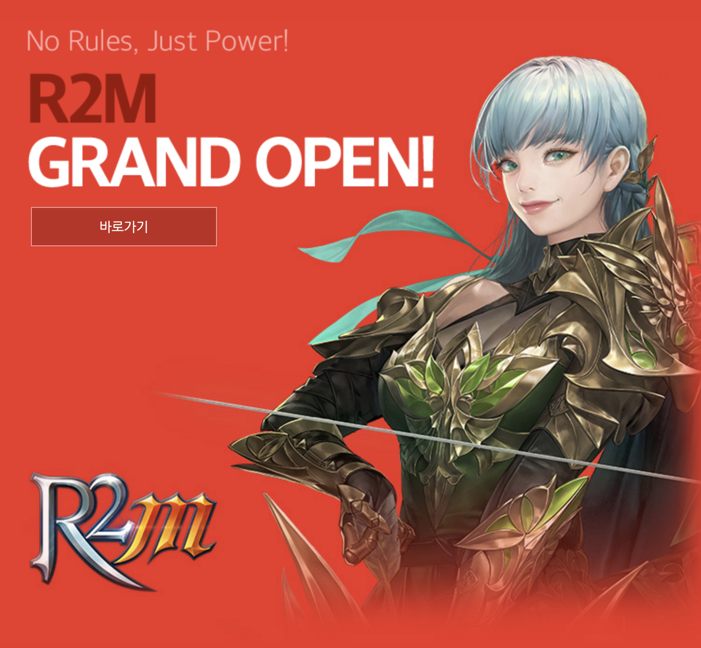

2003년에는 중국, 2004년에는 일본으로 각각 뮤 온라인을 출시했고, 2005년에는 필리핀 시장에 뮤 온라인을 출시했다. 2005년부터는 차기작인 'SUN(Soul of the Ultimate Nation)' 등을 출시했으며 2011년 2월, ‘메틴2’로 유럽시장 온라인게임 시장 점유 1위를 기록 중인 (주)이미르엔터테인먼트의 지분 100%와 경영권을 인수했다. 2013년 07월, 웹젠은 '아크로드2'와 '뮤2' 등 온라인게임 개발 및 '뮤 더제네시스'를 비롯한 모바일 게임사업 진출에 주력하고 있으며, 북미/유럽 지역을 대상으로 게임포털 'gPotato'를 운영하면서 해외 게임서비스 확대에 집중하고 있다.
